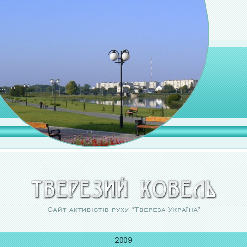

Тверезий Ковель
Об'єднання людей і громадських організацій Ковеля, які усвідомлюють критичний стан нашого наркотизованого суспільства, живуть тверезо і виступають за утвердження в суспільстві тверезого способу життя. Рух «Твереза Україна»
Сайт tverezo.com і tverezo.at.ua
2009-2011
© 2021
Данилюк